Stills of all five directions, captured from the running site at 1440px (and 390px for mobile). These are real renders — the same pages, same content, different visual language.
Nothing here is a mockup. For the live version with a switcher, open themes.html.
| Token | Ivory & Navy | Atlas | Terrace | Nightfall | Varsity |
|---|---|---|---|---|---|
| display | "Iowan Old Style" | -apple-system | "Iowan Old Style" | -apple-system | -apple-system |
| hWeight | 500 | 620 | 500 | 640 | 700 |
| radiusLg | 16px | 2px | 6px | 20px | 24px |
| accent | #C08E3C | #1B4DFF | #B4522F | #3ED6A4 | #C8102E |
| paper | #F7F5F1 | #FFFFFF | #FBF6EC | #0B0F17 | #F7F7FA |
| heroBase | #04101F | #08080A | #13251B | #05070C | #0C0C10 |
Institutional and calm. Serif headlines, brass accents, soft depth. The safe choice for trustees, faculty and alumni.
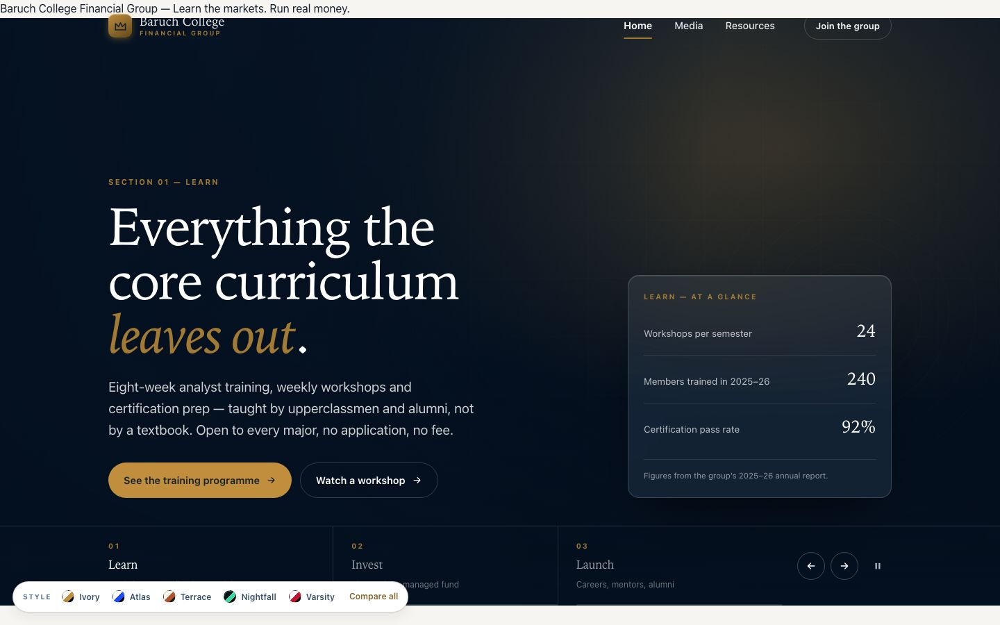
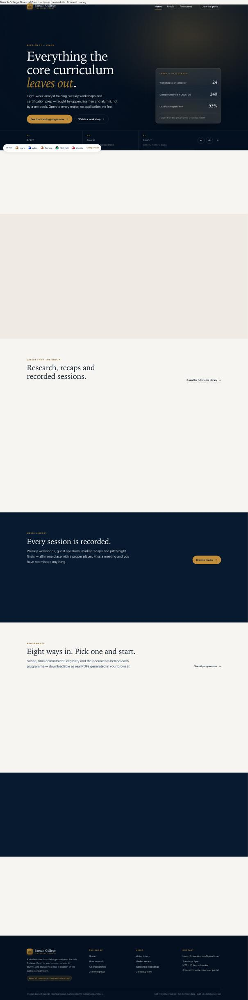
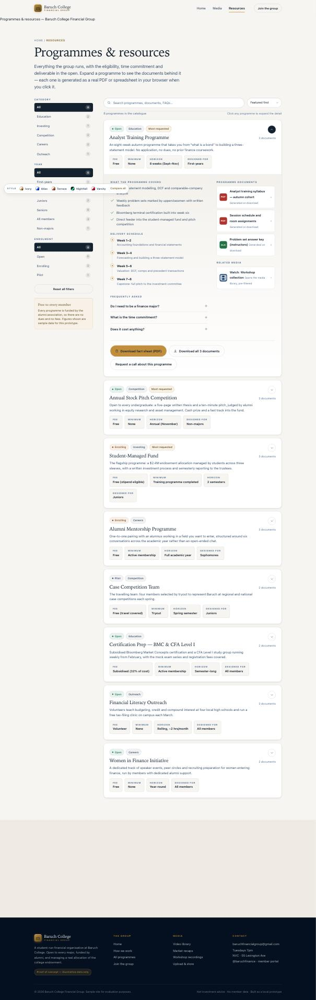
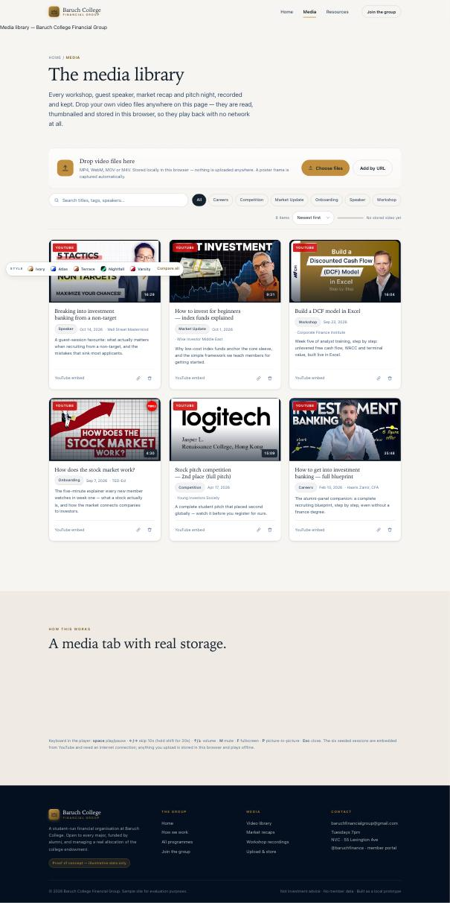
Modern academic. Grotesque headlines, hairline rules, square corners, cobalt accent, dense grid. Reads like a design-forward university.
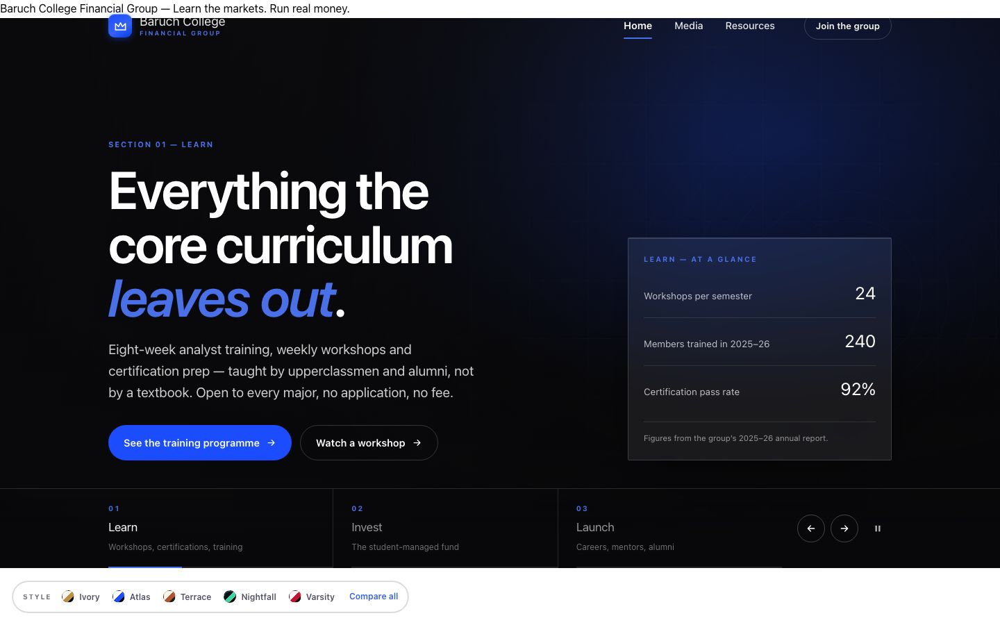
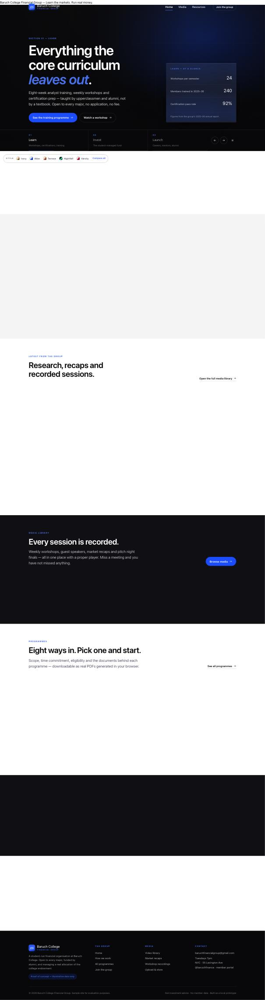
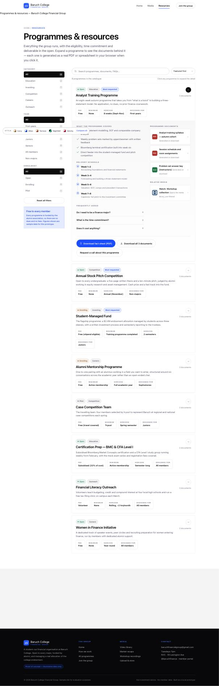
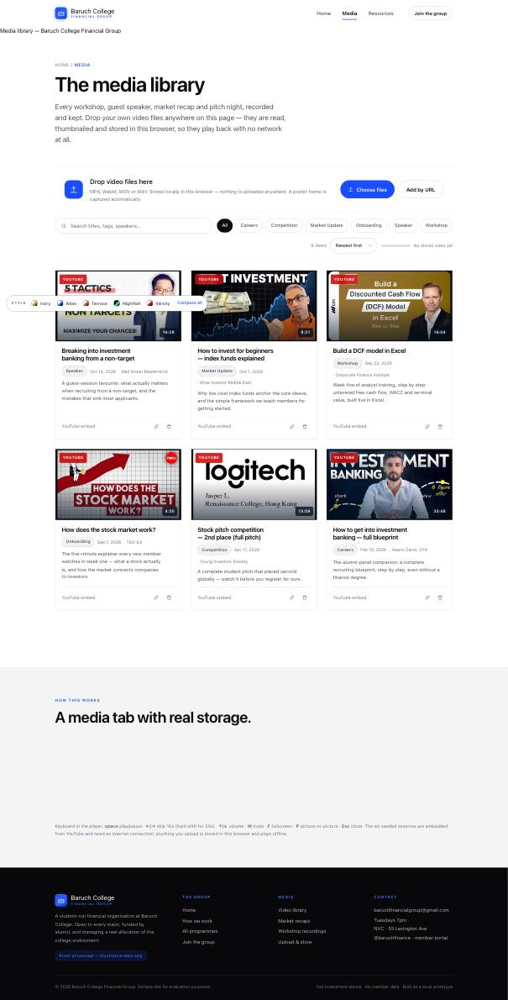
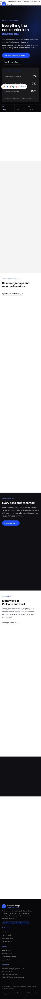
Warm editorial. Cream paper, terracotta and forest, large serif type, flat surfaces and rule lines. Human and literary.
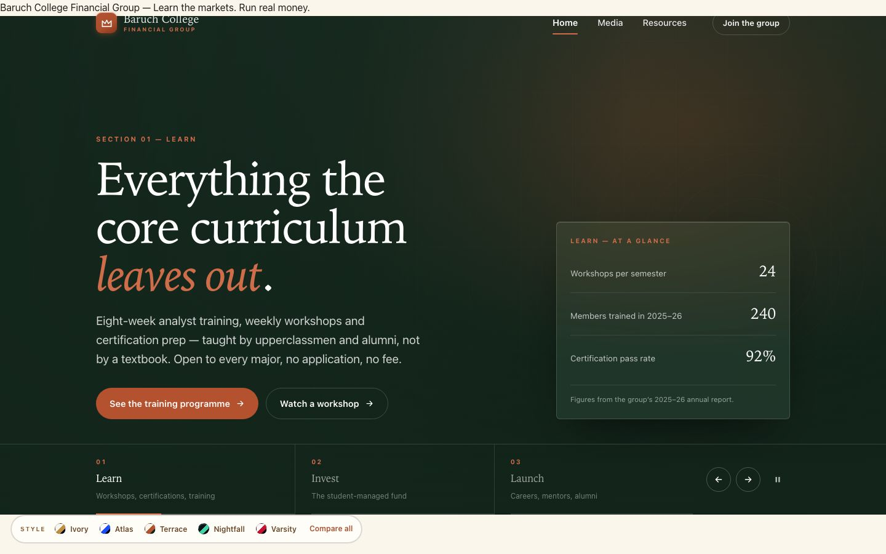
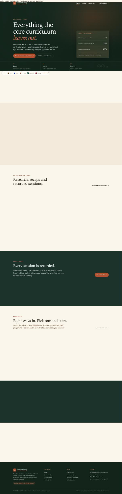
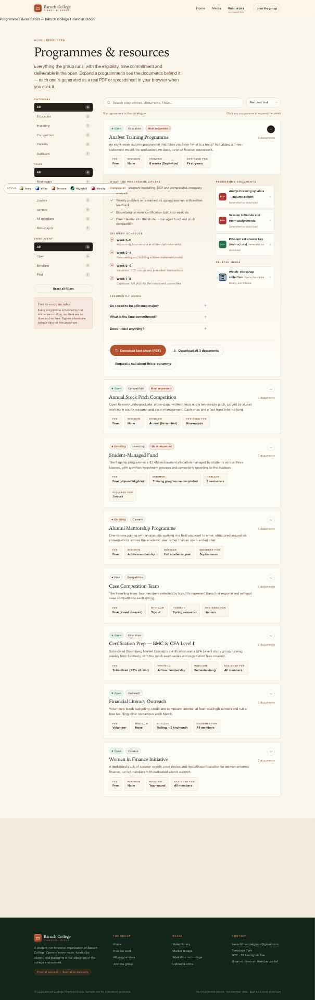
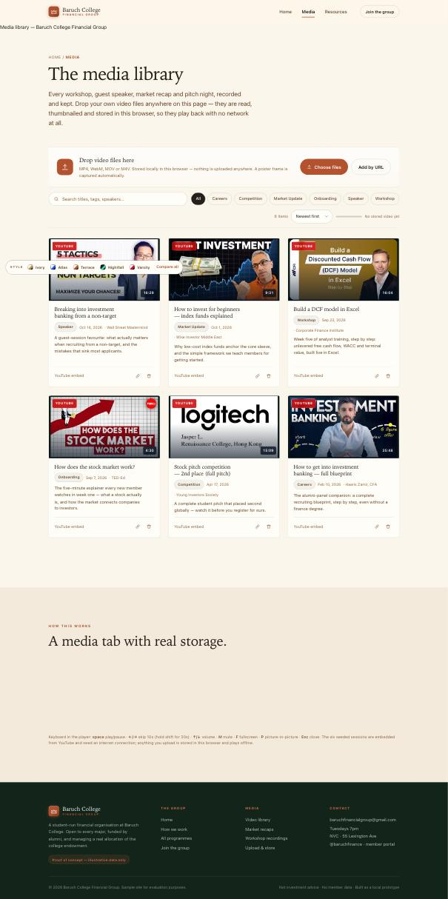
Dark and product-like. Mint accent, rounded panels, soft glow. The one students tend to pick.
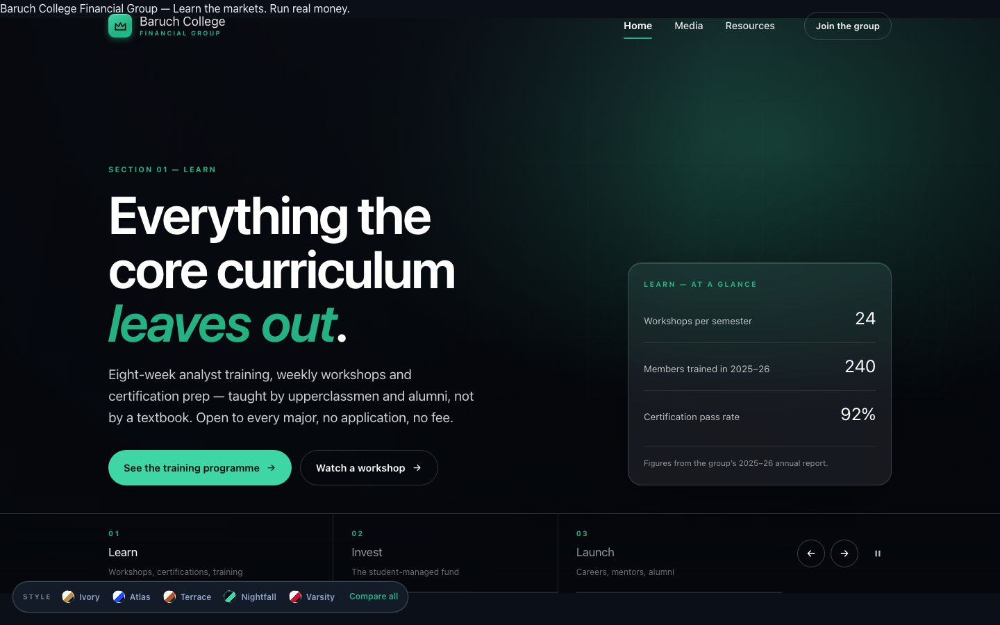
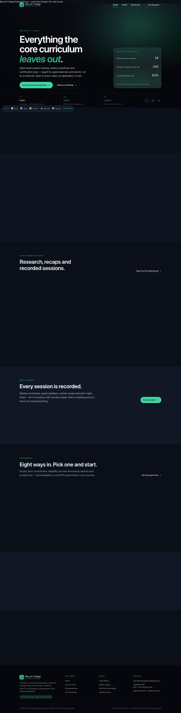
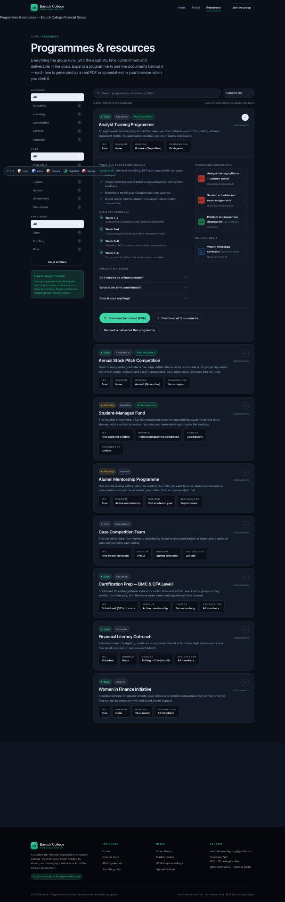
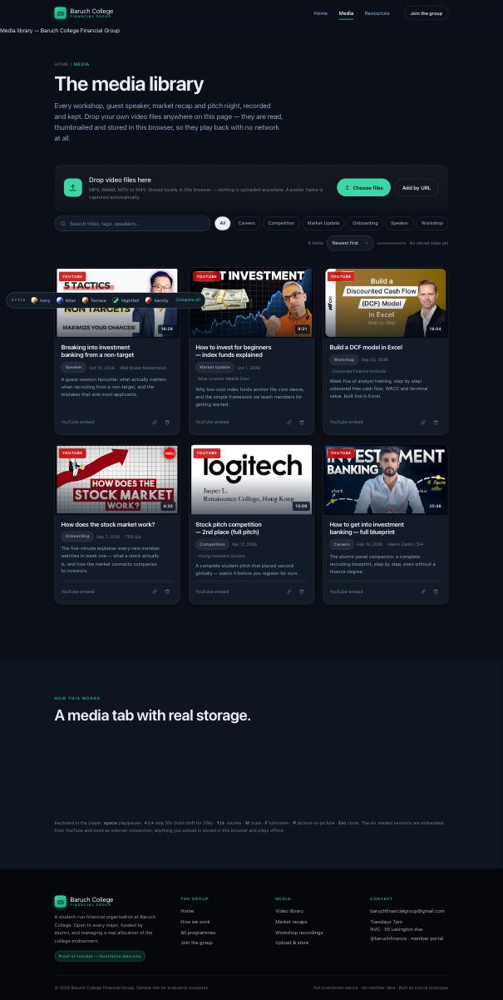
Loud and collegiate. Crimson on charcoal, heavy weights, big radii, chunky shadows. School-spirit energy for recruiting season.
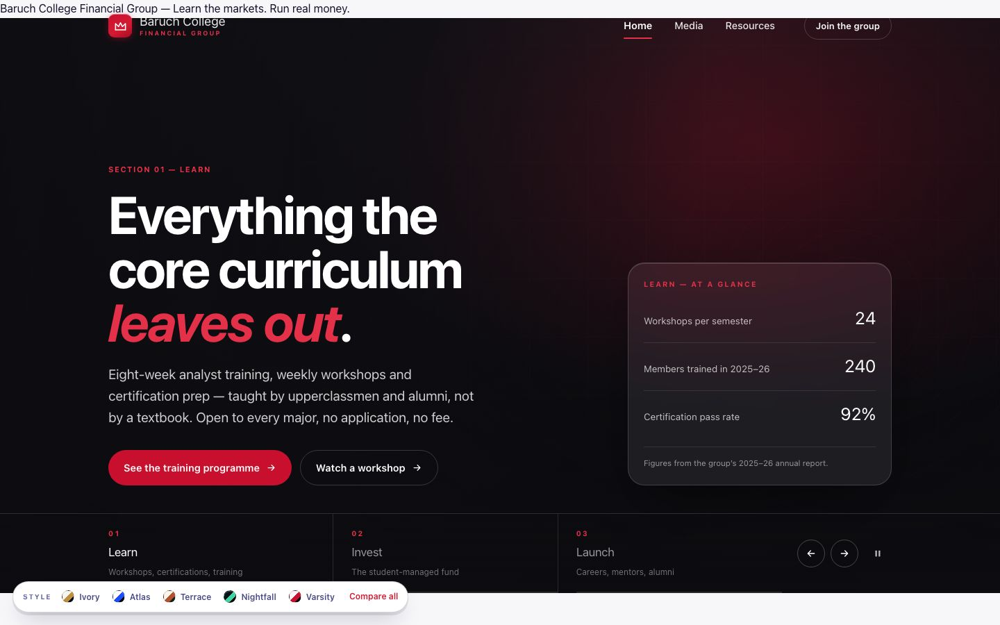
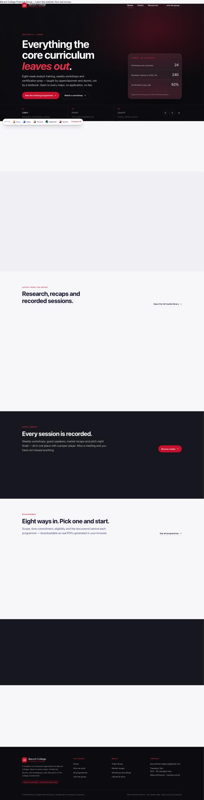
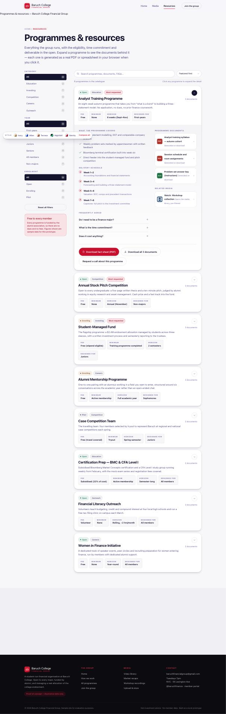
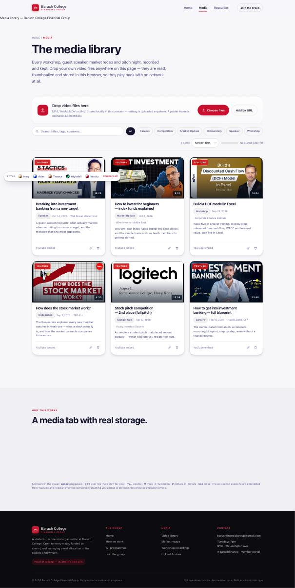
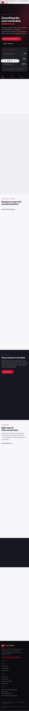